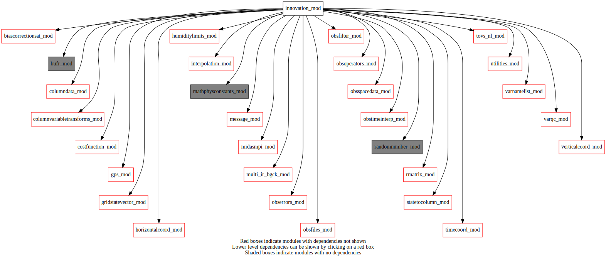
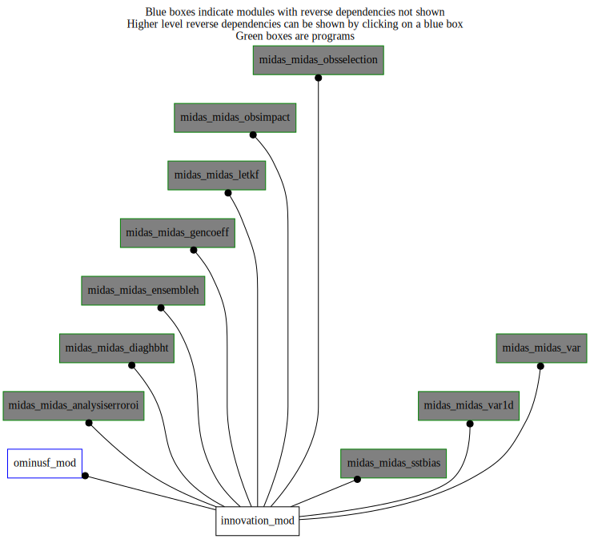

Dependency Diagrams:
 Direct Dependency Diagram¶
 Reverse Dependency Diagram¶
Description
MODULE innovation_mod (prefix=’inn’ category=’1. High-level functionality’)
- Purpose
Several high-level subroutines used to compute the innovations: that is, the observation-minus-background values. This includes the subroutine that reads in the gridded high-res background state from standard files.
Quick access
- Routines
inn_computeinnovation(),inn_gethcovcofromtrlmfile(),inn_perturbobs(),inn_setupcolumnsonanlinclev(),inn_setupcolumnsontrllev(),inn_setupobs(),setobsmpistrategy()Needed modules
midasmpi_mod: MODULE midasMpi_mod (prefix=’mmpi’ category=’8. Low-level utilities and constants’)
obsspacedata_mod: MODULE obsSpaceData_mod (prefix=’obs’ category=’6. High-level data objects’)
columndata_mod: MODULE columnData_mod (prefix=’col’ category=’6. High-level data objects’)
timecoord_mod: MODULE timeCoord (prefix=’tim’ category=’7. Low-level data objects’)
obstimeinterp_mod: MODULE obsTimeInterp_mod (prefix=’oti’ category=’4. Data Object transformations’)
obsoperators_mod: MODULE obsOperators_mod (prefix=’oop’ category=’5. Observation operators’)
mathphysconstants_mod: MODULE MathPhysConstants_mod (prefix=’mpc’ category=’8. Low-level utilities and constants’)
horizontalcoord_mod: MODULE HorizontalCoord_mod (prefix=’hco’ category=’7. Low-level data objects’)
varnamelist_mod: MODULE varNameList (prefix=’vnl’ category=’7. Low-level data objects’)
verticalcoord_mod: MODULE verticalcoord (prefix=’vco’ category=’7. Low-level data objects’)
gridstatevector_mod: MODULE gridStateVector_mod (prefix=’gsv’ category=’6. High-level data objects’)
utilities_mod: MODULE utilities_mod (prefix=’utl’ category=’8. Low-level utilities and constants’)
message_mod: MODULE message_mod (prefix=’msg’ category=’8. Low-level utilities and constants’)
obsfilter_mod: MODULE obsFilter_mod (prefix=’filt’ category=’5. Observation operators’)
gps_mod: MODULE gps_mod (prefix=’gps’ category=’5. Observation operators’)
tovs_nl_mod: MODULE tovs_nl (prefix=’tvs’ category=’5. Observation operators’)
multi_ir_bgck_mod: MODULE multi_ir_bgck_mod (prefix=’irbg’ category=’1. High-level functionality’)
obsfiles_mod: MODULE obsFiles_mod (prefix=’obsf’ category=’3. Observation input/output’)
randomnumber_mod: MODULE randomNumber_mod (prefix=’rng’ category=’8. Low-level utilities and constants’)
obserrors_mod: MODULE obsErrors_mod (prefix=’oer’ category=’2. B and R matrices’)
bufr_mod: MODULE bufr_mod (prefix=’bufr’ category=’8. Low-level utilities and constants’)
statetocolumn_mod: MODULE stateToColumn (prefix=’s2c’ category=’4. Data Object transformations’)
biascorrectionsat_mod: MODULE biasCorrectionSat_mod (prefix=”bcs” category=’1. High-level functionality’)
columnvariabletransforms_mod: MODULE columnVariableTransforms (prefix=’cvt’ category=’4. Data Object transformations’)
rmatrix_mod: MODULE rMatrix_mod (prefix=’rmat’ category=’2. B and R matrices’)
costfunction_mod: MODULE costfunction_mod, (prefix=”cfn” category=’5. Observation operators’)
varqc_mod: MODULE varqc (prefix=’vqc’ category=’1. High-level functionality’)
humiditylimits_mod: MODULE humidityLimits_mod (prefix=’qlim’ category=’4. Data Object transformations’)
interpolation_mod: MODULE interpolation_mod (prefix=’int’ category=’4. Data Object transformations’)Variables
Subroutines and functions
- subroutine innovation_mod/inn_setupobs(obsspacedata, hco_anl, obscolumnmode, obsmpistrategy, innovationmode_in[, obsclean_opt])¶
- Purpose
To initialize the observation parameters and constants
- Arguments
obsspacedata [struct_obs ]
hco_anl [struct_hco ,pointer]
obscolumnmode [character ]
obsmpistrategy [character ]
innovationmode_in [character ,in]
- Options
obsclean_opt [logical ]
- Called from
omf_ominusf(),omf_ominusfens(),midas_sstbias,midas_analysiserroroi,midas_diaghbht,midas_ensembleh,midas_gencoeff,midas_letkf,midas_obsimpact,midas_obsselection,midas_var,midas_var1d- Call to
utl_tmg_start(),obs_class_initialize(),obs_initialize(),obsf_filessplit(),filt_setup(),tvs_setup(),obsf_readfiles(),utl_tmg_stop(),gps_setupro(),obs_famexist(),gps_setupgb(),filt_suprep(),bcs_setup(),bcs_filterobs(),obs_clean2(),setobsmpistrategy(),obs_squeeze(),obs_columnactive_ih(),obs_mpiredistribute(),obs_reducetompilocal(),tvs_setupalloc(),irbg_setup(),oer_setinterchancorr()
- subroutine innovation_mod/inn_setupcolumnsontrllev(columntrlontrllev, obsspacedata, hco_core, statevectorupdatehighres[, deallocinterpinfonl_opt])¶
- Purpose
To compute vertical (and potentially slanted) columns of trial data interpolated to obs location
- Arguments
columntrlontrllev [struct_columndata ]
obsspacedata [struct_obs ]
hco_core [struct_hco ,pointer]
statevectorupdatehighres [struct_gsv ]
- Options
deallocinterpinfonl_opt [logical ]
- Called from
omf_ominusf(),midas_diaghbht,midas_gencoeff,midas_obsimpact,midas_obsselection,midas_var,midas_var1d- Call to
utl_isnamelistpresent(),utl_abort(),gsv_getvco(),col_setvco(),col_allocate(),obs_numheader(),obs_extractobsrealheadercolumn(),s2c_nl(),col_getnumcol(),col_varexist(),col_getcolumn()
- subroutine innovation_mod/inn_setupcolumnsonanlinclev(columntrlontrllev, columntrlonanlinclev)¶
- Purpose
To create trial data columns on analysis increment levels
- Arguments
columntrlontrllev [struct_columndata ]
columntrlonanlinclev [struct_columndata ]
- Called from
omf_ominusf(),omf_ominusfens(),midas_diaghbht,midas_obsimpact,midas_obsselection,midas_var,midas_var1d- Call to
col_getnumcol(),msg(),col_varexist(),col_getcolumn(),int_vinterp_col(),col_getnumlev(),vnl_iscloudvar(),qlim_getminvaluecloud(),qlim_getmaxvaluecloud(),vnl_varkindfromvarname(),vnl_varlistindex()
- subroutine innovation_mod/inn_computeinnovation(columntrlontrllev, obsspacedata[, filterobsandinitoer_opt[, applyvarqconnljo_opt[, destobscolumn_opt[, besilent_opt[, callfilttopo_opt[, callseterrgpsgb_opt[, analysismode_opt]]]]]]])¶
- Purpose
To initialize observation innovations using the nonlinear H
- Arguments
columntrlontrllev [struct_columndata ]
obsspacedata [struct_obs ]
- Options
filterobsandinitoer_opt [logical ]
applyvarqconnljo_opt [logical ]
destobscolumn_opt [integer ] :: column where result stored, default is OBS_OMP
besilent_opt [logical ]
callfilttopo_opt [logical ] :: whether to make call to FiltTopo
callseterrgpsgb_opt [logical ] :: whether to make call to oer_SETERRGPSGB
analysismode_opt [logical ] :: analysisMode argument for oer_SETERRGPSGB and oop_gpsgb_nl
- Called from
omf_ominusf(),omf_ominusfens(),midas_diaghbht,midas_ensembleh,midas_gencoeff,midas_letkf,midas_obsimpact,midas_obsselection,midas_var,midas_var1d- Call to
utl_tmg_start(),oti_timebinning(),filt_topo(),filt_surfacewind(),oop_vobslyrs(),col_getnumlev(),oop_ppp_nl(),oer_sw(),oop_sfc_nl(),filt_radvel(),oop_radvel_nl(),oop_sst_nl(),filt_iceconcentration(),filt_backscatanisice(),oer_seterrbackscatanisice(),oop_ice_nl(),oop_hydro_nl(),oop_tovs_nl(),tim_getdatestamp(),oop_zzz_nl(),obs_famexist(),filt_gpsro(),oer_seterrgpsro(),oop_gpsro_nl(),oop_chm_nl(),oer_seterrgpsgb(),oop_gpsgb_nl(),utl_tmg_stop(),rmat_rsqrtinverseallobs(),cfn_calcjo(),vqc_nltl(),cfn_sumjo()
- subroutine innovation_mod/setobsmpistrategy(obsspacedata, hco_anl, mpistrategy)¶
- Purpose
To distribute header indices following the chosen strategy, current options: “LIKESPLITFILES”, “ROUNDROBIN”, “LATLONTILES”.
- Arguments
obsspacedata [struct_obs ,inout]
hco_anl [struct_hco ,in,pointer]
mpistrategy [character ,in]
- Called from
- Call to
obs_numheader(),obs_headset_i(),obs_columnactive_ih(),obs_headelem_r(),mmpi_myidyfromlat(),mmpi_myidxfromlon(),utl_abort()
- subroutine innovation_mod/inn_perturbobs(obsspacedata, numanalyses, indexanalysis, indexbatch, obs_column_index_src, obs_column_index_dest)¶
- Purpose
To perturb the innovation vector to simulate effect of observation uncertainty
Warning
perturbations are not the same when MPI topology changes!!!
- Arguments
obsspacedata [struct_obs ]
numanalyses [integer ]
indexanalysis [integer ]
indexbatch [integer ]
obs_column_index_src [integer ]
obs_column_index_dest [integer ]
- Call to
obs_numbody(),rng_setup(),rng_gaussian(),obs_bodyelem_r(),obs_getfamily(),obs_bodyelem_i()
- subroutine innovation_mod/inn_gethcovcofromtrlmfile(hco_trl, vco_trl)¶
- Purpose
Get hco/vco of the trials
- Arguments
hco_trl [struct_hco ,inout,pointer]
vco_trl [struct_vco ,inout,pointer]
- Called from
omf_ominusf(),midas_diaghbht,midas_gencoeff,midas_obsimpact,midas_obsselection,midas_var,midas_var1d- Call to
gsv_isinitialized(),gsv_setup(),gsv_varnameslist(),hco_setupfromfile(),vco_setupfromfile()
{kind=link}
{kind=link}